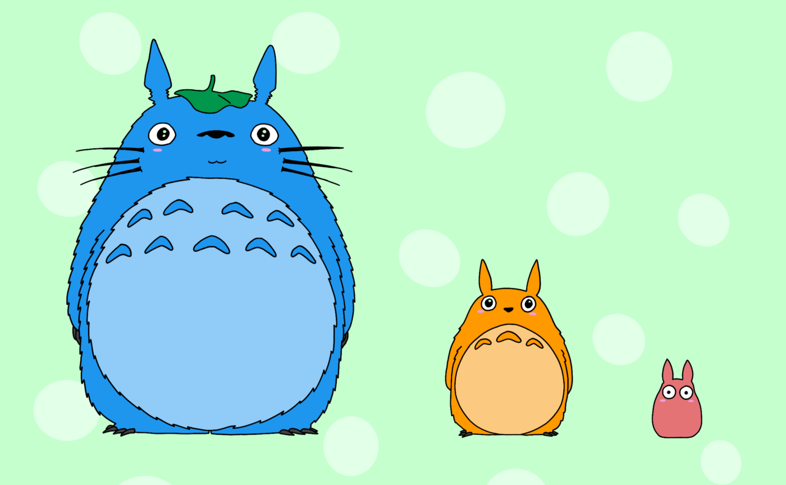
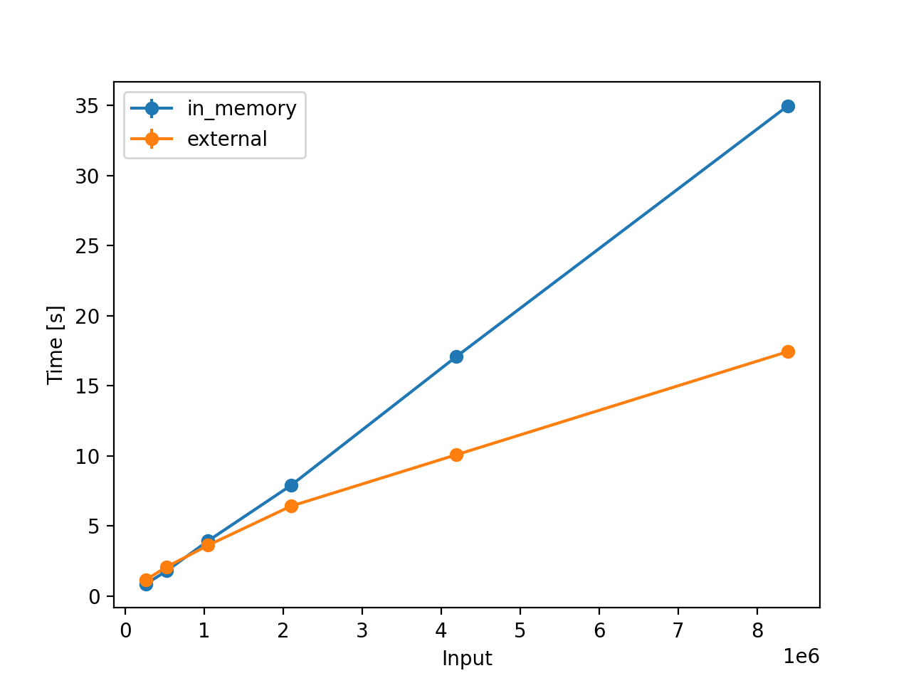
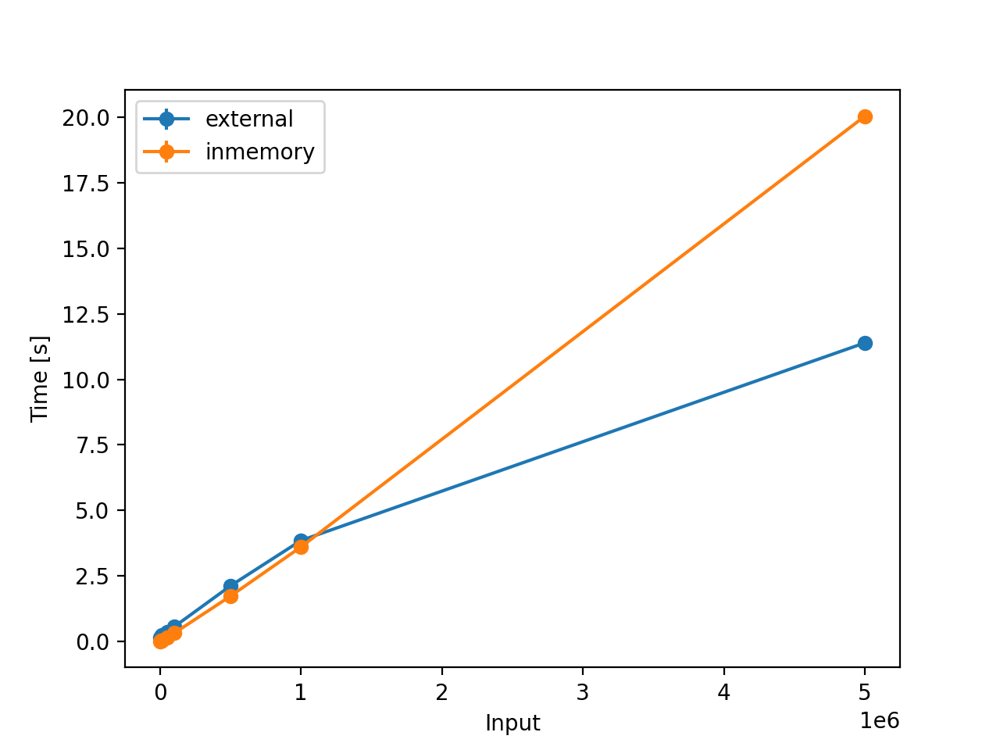

External Merge Sort using Priority Queue
·
Code on the Road·
#Algorithms
#Python
#Data Structures 3 min read
3 min read

External Sorting — Totoro.
External sorting is a class of sorting algorithms that can handle massive amounts of data. External sorting is required when the data being sorted does not fit into the main memory of a computing device (RAM). Instead, they must reside in the slower external memory (Disk).
To explain the working of External Merge Sort using a Priority Queue, consider the input array: [5, 8, 6, 3, 7, 1, 4, 9, 10, 2]
Overview: In the Split Phase, the large input file is split into smaller chunks that can be fit into the memory. In the Merge Phase, perform K-way merge with each smaller chunk file one after the other and write the output to a file.
Split Phase:
- Split the input into chunks (5 chunks).
- Then, sort each of the individual chunks.
- Finally, store the sorted chunks in files (5 temporary files).
Doing so, we have 5 files with:
Chunk 1: [5, 8]
Chunk 2: [3, 6]
Chunk 3: [1, 7]
Chunk 4: [4, 9]
Chunk 5: [2, 10]
Merge Phase:
Create m number of HeapNode(s), where the value of the HeapNode is the chunk’s lowest element, and store the reference to the temporary chunk file.
Example:
{
"element": 5,
"file": <chunk-file>
}
- Now, store all the m
HeapNode(s) in a Min Heap, where the top node is always the minimum element in the heap:
1
/ \
2 5
/ \
4 3
- Perform the heapify operation -> store the element in an output file -> replace the min element with the next element in the chuck file, which owns min element
- Pick the min element in the min-heap 1 and write it to an output file
1 - Find the next element in the chunk file, which owns min element 1
- Number 7 from Chunk 3; move it to the heap and perform heapify
7 2
/ \ / \
2 5 Heapify --> 3 5
/ \ / \
4 3 4 7
- Pick the min element 2 and append it to output file
1, 2 - Find the next element in the chunk file, which owns min element 2
- Number 10 from Chunk 5; move it to the heap and perform heapify
10 3
/ \ / \
3 5 Heapify --> 4 5
/ \ / \
4 7 10 7
- Pick the min element 3 and append it to output file
1, 2, 3 - Find the next element in the chunk file, which owns min element 3
- Number 6 from Chunk 2; move it to the heap and perform heapify
6 4
/ \ / \
4 5 Heapify --> 6 5
/ \ / \
10 7 10 7
- Pick the min element 4 and append it to output file
1, 2, 3, 4 - Find the next element in the chunk file, which owns min element 4
- Number 9 from Chunk 4; move it to the heap and perform heapify
9 5
/ \ / \
6 5 Heapify --> 6 9
/ \ / \
10 7 10 7
- Pick the min element 5 and append it to output file
1, 2, 3, 4, 5 - Find the next element in the chunk file, which owns min element 5
- Number 8 from Chunk 1; move it to the heap and perform heapify
8 6
/ \ / \
6 9 Heapify --> 7 9
/ \ / \
10 7 10 8
- If the next element in the chunk file is smaller than the current min element, replace the min element in
MAX_INTEGERand repeat the process until all the elements in the heap areMAX_INTEGER - Pick the min element 6 and append it to output file
1, 2, 3, 4, 5, 6 - Find the next element in the chunk file, which owns min element 6
- When you see EOF (End of Line), replace it with
MAX_INTEGER
MAX_INT 7
/ \ / \
7 9 Heapify --> 8 9
/ \ / \
10 8 10 MAX_INT
- Continue until the heap looks like:
MAX_INT
/ \
MAX_INT MAX_INT
/ \
MAX_INT MAX_INT
The final output: 1, 2, 3, 4, 5, 6, 7, 8, 9, 10 😎
Since you are anyway here, Checkout sorting-algorithms 🚀 to compare sort algorithms; here’s a comparison of the external sort with in-memory merge sort.

Figure 1: For Powers of 2

Figure 2: For Powers of 10

Cite this article as: Adesh Nalpet Adimurthy. (Mar 1, 2022). External Merge Sort using Priority Queue. PyBlog. https://www.pyblog.xyz/external-merge-sort
 #index
#index